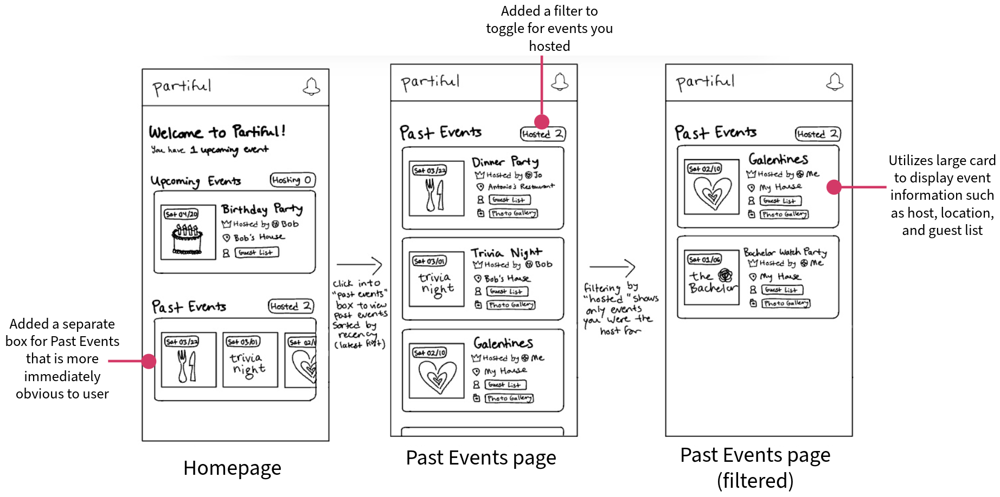

Brief
In this project, we worked as a team to design for the start-up Partiful. Their product, primarily targeting Gen Z and Millenials, enables users to create event pages and send invites to friends, and their mission is to foster real-world connections through technology.
Problem Overview

Partiful's existing design requires the user to scroll to the right horizontally and click into a filter to view their past events. The main drawback of this design is that it can be difficult for users to find their past events because they are not easily available on the landing page.
Their main goal was for us to redesign their mobile app homepage to more prominently feature a user's
past events. According to the founders, whom we corresponded with via email and on a shared project brief document,
their main metrics were as follows:
Customer Pain Points:
- As a host, it’s difficult to navigate back to a past event to reminisce or utilize helpful Partiful features like Text Blast.
- As a guest, it’s difficult to navigate back to a past event to reminisce, ask for photos, or view already posted photos.
- It’s difficult to find the people you recently partied with to either look them up on another platform (Instagram) or ask friends about them.
Discussing the brief with the founders cleared up a lot of questions we had. In particular, the founder’s assertion that it was very difficult for the average user to navigate to past events as well as the greater goal of improving the app’s learnability was a great starting point.
Visual Redesign
⟡ Part I: Sketching and Brainstorming
Above is one of the two sketches I produced for my team. My main mindset was building off the existing Partiful framework but adding a new section solely dedicated to past events. I also utilized a larger card featuring some brief information about each event in hopes of making the design more understandable to the user.
⟡ Part II: Wireframing and Initial Feedback
As a team, we shared our sketches and dicsussed a plan to move forward. From here, we created multiple low-fidelity wireframes, with the design we decided on displayed below.
In our design, we hoped to address the main concern of Past Events being difficult for users to access. We also wanted to improve the searchability of events overall through adding a search bar. Finally, because a user is more likely to have more past events than upcoming events, we decided to implement a vertical scroll for past events and horizontal scroll for upcoming.
After we finalized our first wireframe, we got the opportunity to contact the Partiful founders and get their direct
feedback on it. They encouraged us to think outside the box and propose multiple more creative solutions to
displaying Past Events, so we took this to heart and decided to diversify our work by incorporating new ideas.
This resulted in the production of two more lo-fi prototypes, both of which featured ideas I came up with.
The new ideas I came up with were a social media-esque feed design, where each event has its own "post" that users can scroll through and interact with. Within these "posts," status updates of users RSVPing or commenting on an event will update the post. The other one I proposed was a map view, where all events would appear by location based on a user's surroundings.
⟡ Part III: High-Fidelity Prototyping and Final Critiques
The Partiful team shared their style guide with us, and we began working on our high-fidelity prototypes of our three ideas. We created three hi-fis with our three ideas: our basic solution, feed-based social media-esque design, and lastly a map view.

This time, we got the opportunity to meet directly with the Partiful founders via Zoom call for a final round of critiques. The feedback they gave us was as follows:
- Basic: The founders were receptive to this idea and felt it made Past Events more accessible. They did prompt us to consider if we want to expose guest lists for all upcoming events from the homepage (top level), as then it would eliminate the need for users to click onto an event. They suggested a system where currently occurring events would have all the information displayed, but other upcoming events could be smaller cards. They liked the idea of displaying mutuals on the main page, as this encourages interactions between mutuals (including sending emojis and chatting).
- Feed: The founders viewed the activity feed as a separate page in addition to the main page, but felt it was a little too cluttered to be the landing page itself. They encouraged us to take the concept and play with the hierarchy of information, and also prompted us to think about other ways to display these notifications - do we need timestamps for each card? They did agree that this feed design would incentivise people to click on event cards, but wanted us to explore other gestures for the iOS app and suggested visual changes like stacking user avatars, which could be clicked on or pinched to expand information.
- Map: This proposal was received with enthusiasm, as one of the founders we spoke with had previously pitched a similar idea. They were interested in seeing how we can combine past events and upcoming events into one map, especially how we could visualize past events as a heat map. They also suggested utilizing animations such as pulsing icons to draw user attention to ongoing events.
With that meeting, our project reached its conclusion. Overall, it was a great experience in learning how to work with a team towards a final goal. I feel I learned so much from getting to interact with and receive feedback from real-world founders; working through the steps of sketching, lo-fi wireframes, hi-fi prototyping, then modifying our designs based on critiques was invaluable to the development of my design skills and ability to work with others.